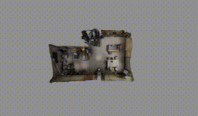

Whole Body Motion Planning in 10Hz
Ongoing
This project combines SIMD motion planning
with hierarchical multilayer RRTC
to enable the Fetch robot to perform whole body planning in under 100ms. This breakthrough makes
near real-time motion planning possible for more reactive mobile manipulation tasks,
significantly enhancing the robot's responsiveness in dynamic environments.

Uniform Framework for Data Gathering and Behavior Cloning
Completed
A comprehensive framework for robot imitation learning that supports multiple data gathering interfaces
(GELLO, VR controller, joint stick, and hand tracking) and various robot embodiments
(Fetch, Kinova Gen3, Franka FR3). The behavior cloning component implements state-of-the-art
approaches including ACT and diffusion policy, enabling efficient transfer of human demonstrations
to robotic systems.

RLS Digital Twin Platform
Completed
A comprehensive digital twin platform designed to support student
projects in CS6244 Advanced Topics in Robotics at NUS. This platform
provides the infrastructure and tools for graduate students to
develop and evaluate mobile manipulation algorithms in realistic
environments, serving as the foundation for various course projects
and research explorations.

Gaussian Splatting Toolkit
Completed
An enhanced Gaussian Splatting framework for
indoor 3D mesh reconstruction, incorporating novel
geometric constraints for improved accuracy. The toolkit provides
comprehensive documentation and easy-to-use interfaces for various
3D reconstruction tasks.

Final Year Project: Study of Local Descriptors for Robust Visual
Place Recognition
Completed
Research on improving Visual Place Recognition (VPR) systems through
enhanced local descriptor selection. Developed novel descriptor
selection methods using semantic segmentation and high-pass filters,
creating a comprehensive evaluation framework for VPR performance.